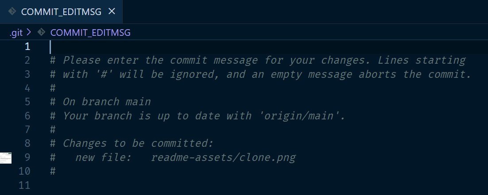

1.5. Understand Git and GitHub basics#
Using Git with Visual Studio Code#
Watch the video below, Using Git with Visual Studio Code.
Tip
If you are new to programming, the video may seem overwhelming. Don’t worry, we will practice it a lot in class. I won’t require branching in the assignments, but it may be helpful if you want to experiment with changes to your website.
Git vs. Github#
Git#
Git is a free, open-source distributed Version Control System (VCS). A VCS is a useful tool for tracking changes to your code, collaborating, and sharing. With Git you can track the changes you make to your project so you always have a record of what you’ve worked on and can easily revert back to an older version if needed. It also makes working with others easier – groups of people can work together on the same project and merge their changes into one final source.
VS Code has built-in support for Git. VS Code’s Activity Bar (a vertical menu, by default on the left) contains a source control icon where you can run the Git commands you need for this course:
{kind=link}
If you have experience with command line, you can also run Git commands in the VS Code terminal. To learn more about Git, check out the Git documentation. The Pro Git book included in the Git documentation is a great resource for learning more about Git.
GitHub#
While Git is an open-source project, GitHub is owned by Microsoft. GitHub hosts Git repos online. It’s extremely popular and used across the software world.
GitHub does more than host repos. It has many more advanced features that you can use to collaborate with others, manage your projects, and build software. We are using GitHub in this course because it hosts free static websites using GitHub Pages.
GitHub terms to know#
- Repository or “repo”
A repository, or repo, is where your project work happens – think of it as your project folder. It contains all of your project’s files and a history of your changes to the files. You can work within a repository alone or invite others to collaborate with you on those files.
Tip
In order for GitHub to work with your project, always open a folder in VS Code when you start your project – don’t just open a single file.
- Clone
Clone is a fancy way of saying copy. When a repository is created with GitHub, it’s stored remotely in the cloud. You can edit your files directly on GitHub using the GitHub UI, but it’s more efficient to clone a repository to create a local copy on your computer and then use Git to sync the two. This makes it easier to fix issues, add or remove files, and push larger commits. We will clone repos from GitHub using HTTPS. Click on the Code button in the upper right of the GitHub project, and click the copy button to copy the URL. You will paste this URL into VS Code using its Clone from GitHub command.
{kind=link}
- Commit
You make a commit when you have made changes to your project and you want to “checkpoint,” or save a snapshot of the current state of your project. You need to add a helpful commit message to remind yourself or your teammates what work you did (e.g. “Added a README with info about our project”). In VS Code, you can add the commit message in the Source Control menu.
{kind=link}
Tip
If you accidentally hit “Commit” without entering a commit message, a Git commit message file will open. Add the commit message on the first line in that file and then save it to complete the commit.
{kind=link}
- Push (or VS Code’s Sync)
When you are ready to share your work with your instructor and/or teammates, you can push it to GitHub. Once you have a commit or multiple commits that you’re ready to add to your GitHub repository, you can use VS Code’s Sync to push those changes to your GitHub repository. Sync actually pulls any remote changes made in the Github repo (such as changes made in online GitHub UI), adds them to your local repo, the pushes your local commits to Github.
{kind=link}
- README.md
GitHub repositories also contain README.md files. The .md extensions indicates that the file is written in markdown, which is a plain text formatting syntax. To learn about GitHub’s markdown language, read its Basic Writing and Formatting Syntax page. You add a README file to your repository to tell other people why your project is useful, what they can do with your project, and how they can use it. To learn more read About README’s.
- Branches
We likely won’t be using branches in this course, but it’s good to know what they are. You can use branches on GitHub to isolate work that you do not want merged into your final project just yet. Branches allow you to develop features, fix bugs, or safely experiment with new ideas in a contained area of your repository. Typically, you might create a new branch from the default branch of your repository – main. This makes a new working copy of your repository for you to experiment with. Once you are satisfied with the new changes you can merge your changes into the default branch of your repository. To learn more about branching, read About Branches.
- Forks
A fork is another way to copy a repository, but is usually used when you want to contribute to someone else’s project. Forking a repository allows you to freely experiment with changes without affecting the original project. Forking is very popular when contributing to open source software projects. To learn more about forking, read Fork a repo.
- Pull requests
When working with branches or forks, you can use a pull request to tell others about the changes you want to make and ask for their feedback. Once a pull request is opened, you can discuss and review the potential changes with collaborators and add more changes if need be. You can add specific people as reviewers of your pull request which shows you want their feedback on your changes. Once a pull request is ready, it can be merged into your main branch. To learn more about pull requests, read About Pull Requests.
- Issues
Issues are a way to track enhancements, tasks, or bugs for your work on GitHub. Issues are a great way to keep track of all the tasks you want to work on for your project and let others know what you plan to work on. You can also use issues to tell a favorite open source project about a bug you found or a feature you think would be great to add. To learn more about issues and linking them to your pull requests, read About Issues.